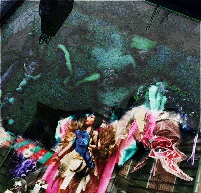

Me and the Small Talk Angel
by PD Lyons

At the gallery today,
Among the masks I thought
Of Morrison.
I thought of that black woman.
I thought of the past,
Remembering the future.
Pleased that knowledge
Only brings more secrets.
Sitting out on the concrete,
Rolling another cigarette,
Chatting with the small talk angel
I pass over the smoke.
 |